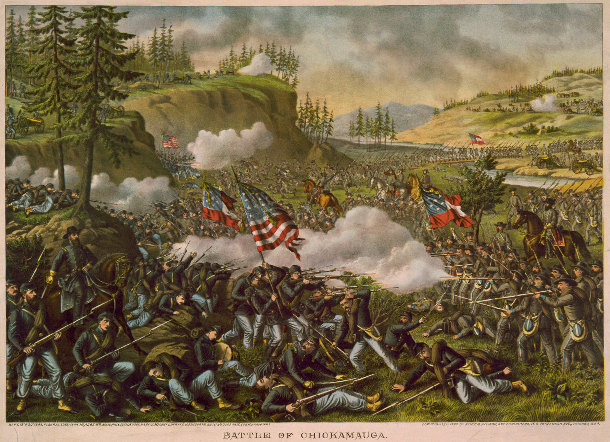
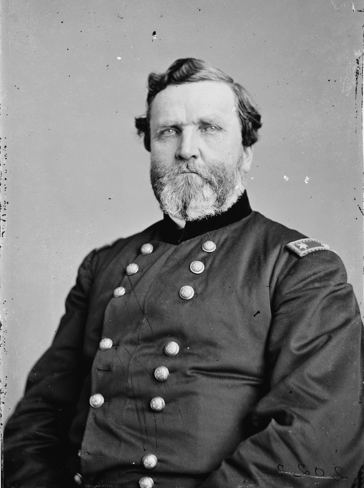

|
Chickamauga was a campaign and battle fought in the
Western Theater of Operations, between Union Major General
William Starke Rosecrans' Army of the Cumberland and
Confederate General Braxton Bragg's Army of Tennessee.
Following Rosecrans' successful Tullahoma Campaign in
June and July of 1863, Bragg's 44,000 soldiers withdrew
across the Tennessee River and concentrated near
Chattanooga, Tennessee while the Union's 59,000 forces
refitted on the western side of the Cumberland Plateau.
|

An 1890 lithograph captures the
intense action at the Battle of Chickamauga.
|
Rosecrans advanced on 16 August, intending to seize the
major transportation center at Chattanooga and force the
Confederate army back towards Atlanta.
Rosecrans crossed the Tennessee River south of
Chattanooga at the beginning of September, advancing his
army across the rugged terrain and into Georgia with three
corps spread across a forty mile-wide front. Bragg
responded by concentrating his forces in a central position
around Lafayette. Simultaneously, Confederate
reinforcements from Knoxville, Mississippi and Virginia
raised his combat strength to over 60,000 soldiers thereby
outnumbering Rosecrans' command. Bragg's aborted ambush of
Maj. Gen. George H. Thomas's corps at McLemore's Cove on 10
September alerted Rosecrans to the danger facing his widely
scattered army. For the next week both armies raced north
to Chattanooga. On 18 September, the two armies clashed
along Chickamauga Creek, as Bragg's forces began attempting
to outflank the Union army.
The fighting on 19 September was essentially a meeting
engagement west of Chickamauga Creek. In spite of fierce
fighting, neither side gained advantage over the other. By
nightfall, Rosecrans had succeeded in concentrating his
forces in a strong position along the Lafayette-Chattanooga
road.
During the evening, both sides modified their command
structure. George Thomas informally assumed command of four
to five divisions in a salient east of Kelly Field on the
north of the battle line, while Rosecrans directed the
remaining Union forces in the south. Bragg attempted a more
formal reorganization into two wings, assigning Lieutenant
General Leonidas Polk to the right and Lieutenant General
|

Maj. Gen. George Thomas' actions in
the Battle of Chickamauga earned him the
nickname "Rock of Chickamauga."
|
James Longstreet, who arrived during the night, to the left.
From the perspective of subordinate commanders, however,
the day began with command arrangements in both armies
somewhat confused.
In the north, Polk's attack on the 20th began several
hours late. Thomas's troops, massed behind breastworks,
slaughtered Rebel infantry at close-range. Timely Union
reinforcements drove back potentially damaging enemy
attempts to flank this line from the north. In the center,
a dispute between Rosecrans and one of his division
commanders around 11 AM resulted in a break in the Union
line. By coincidence, Longstreet launched three divisions
and over 10,000 men into that gap almost as soon as it
appeared. Union forces on the left scattered and Rosecrans
and his staff retreated from the battlefield. Thomas
ultimately rallied about half the army on Snodgrass Hill and
defeated poorly coordinated Confederate attacks for the
remainder of the day. At nightfall, he withdrew all Union
forces back to Chattanooga.
Confederate forces lost 18,000 and the Union 16,000
killed, wounded, and missing. While this largest and
bloodiest battle in the western theater resulted in a
Confederate tactical victory, the Union had taken
Chattanooga, the gateway to the South.
Source: Joan Waugh, ed., Facts on File Encyclopedia of American
History: Civil War and Reconstruction, 1856 to 1869 (New York: Facts on
File, 2003), 58-59.
|